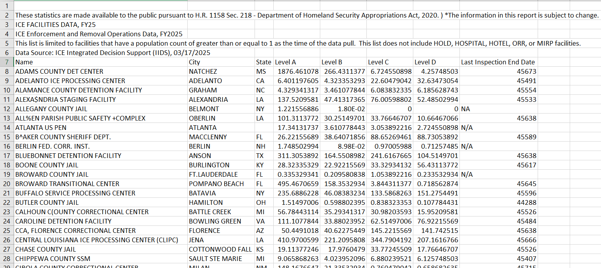
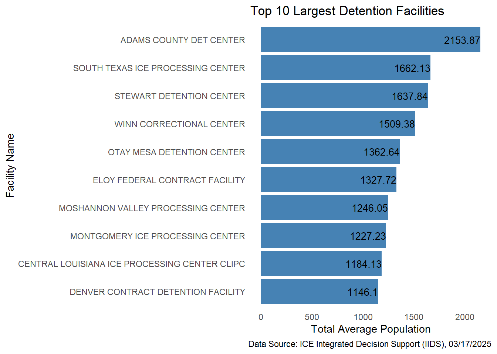

library(dplyr)
library(ggplot2)Ice Detention Facilities Analysis
This report presents an analysis of a dataset containing information on detention facilities in the United States. The dataset is updated on a semimonthly basis and includes details such as facility names, city, states, inspection end dates, and average population levels categorized from A to D.
The primary goal of this analysis is to:
- Clean and preprocess the dataset
Compute total population per detention facility
Identify and visualize the top 10 largest detention facilities by average population
Loading the necessary libraries for our analysis
We are using library dplyr for data manipulations and ggplot2 for data visualization purpose.
Loading the csv file
# Define path to your csv file
path <- "C:/Users/DELL/Documents/Ice_detention_data_analysis/data/messy_ice_detention.csv"
df <- read.csv(path)lets take a look at our dataset.

If we take a look at our dataset we can observe that it contains metadata in some rows. So lets skip them. Also, we can clearly see in some cells we have missing values and some indicated as N/A. So, lets make all of them NA. We can use na.strings , which handles different representation of missing values. We rewrite the code as:
df <- read.csv(path, skip=6, na.strings = c("", "NA", "N/A", "n/a", "na", " "))Lets inspect the strucrure of the dataset.
str(df)'data.frame': 134 obs. of 8 variables:
$ Name : chr "ADAMS COUNTY DET CENTER" "ADELANTO ICE PROCESSING CENTER" "ALAMANCE COUNTY DETENTION FACILITY" "ALEXA$NDRIA STAGING FACILITY" ...
$ City : chr "NATCHEZ" "ADELANTO" "GRAHAM" "ALEXANDRIA" ...
$ State : chr "MS" "CA" "NC" "LA" ...
$ Level.A : num 1876.46 6.4 4.33 137.52 1.22 ...
$ Level.B : num 266.431 4.323 3.461 47.413 0.018 ...
$ Level.C : num 6.72 22.6 6.08 76.01 0 ...
$ Level.D : num 4.26 32.63 6.19 52.49 0 ...
$ Last.Inspection.End.Date: chr "45673" "45491" "45554" "45533" ...As we see, Last.Inspection.End.Date column in charater type, but it should be a date type. But when we see at its values, its in numbers like 45673, 45491, … and so on. These are dates stored as an Excel serial number. In Excel, dates are stored as numbers.
1 = January 1, 1900then,
45673 = 45673 days after Jan 1, 1900. So, we need to convert this numeric value into proper Date.
# Converting character to numeric
df$Last.Inspection.End.Date <- as.numeric(df$Last.Inspection.End.Date)
# No we convert it into standard date format
df_clean <- df %>%
mutate(
Last.Inspection.End.Date = as.Date(Last.Inspection.End.Date, origin = "1899-12-30")
)Now let’s see.
head(df_clean$Last.Inspection.End.Date,5)[1] "2025-01-16" "2024-07-18" "2024-09-19" "2024-08-29" NA Great! Now lets handle the missing values.
Handling Missing Values
First, checking the count of missing values in each columns.
colSums(is.na(df_clean)) Name City State
2 1 2
Level.A Level.B Level.C
0 0 0
Level.D Last.Inspection.End.Date
0 18 Handling Name column
head(df_clean$Name, 10) [1] "ADAMS COUNTY DET CENTER"
[2] "ADELANTO ICE PROCESSING CENTER"
[3] "ALAMANCE COUNTY DETENTION FACILITY"
[4] "ALEXA$NDRIA STAGING FACILITY"
[5] "ALLEGANY COUNTY JAIL"
[6] "ALL%EN PARISH PUBLIC SAFETY +COMPLEX"
[7] "ATLANTA\xa0US\xa0PEN"
[8] "B^AKER COUNTY SHERIFF DEPT."
[9] "BERLIN FED. CORR. INST."
[10] "BLUEBONNET DETENTION FACILITY" Since there are only 2 missing, with the help of name of state and the city, Google search is used to find that particular detention facility name and also it is verified using the ICE website. It is filled manually using code.
df_clean$Name[df$City == "DOVER" & df$State == "NH"] <- "Strafford County Jail"
df_clean$Name[df$City == "ELK RIVER" & df$State == "MN"] <- "Sherburne County Jail"After this the Name column is cleaned by removing the ASCII and non-ASCII characters (like smart spaces, special Unicode symbols, or invisible characters). Used iconv() function to convert all text to UTF-8 and replace invalid char with space ” “.
df_clean <- df_clean %>%
mutate(Name = iconv(Name, from = "", to = "UTF-8", sub = " "),
Name = gsub("[^A-Za-z ]", "", Name)
)Handling City and State Missing Values
Similar approach as Name column is applied to impute the missing values in the column City and State.
# City
df_clean$City[df_clean$Name == "GEAUGA COUNTY JAIL" & df_clean$State == "OH"] <- "Chardon"
# State
df_clean$State[df_clean$Name == "ATLANTA US PEN"] <- "GA" #Georgia
df_clean$State[df_clean$Name == "LA SALLE COUNTY REGIONAL DETENTION CENTER"] <- "TX" #texascolSums(is.na(df_clean)) Name City State
0 0 0
Level.A Level.B Level.C
0 0 0
Level.D Last.Inspection.End.Date
0 18 Handling Missing Values in Date Column
The Last.Inspection.End.Date column contains 18 missing values. These values were not imputed, as any form of random date assignment would be misleading. Since this variable does not contribute to the primary objective of the analysis, the missing entries are left as it is.
Analysis
A new column TotalPopulation is created which is the summation of columns Level A , Level B , Level C and Level D. The result is rounded up to 2 decimal place. Also, the data is arranged in desceding order.
df_clean <- df_clean %>%
mutate(`Total Population` = round(Level.A + Level.B + Level.C + Level.D, 2)) %>%
arrange(desc(`Total Population`))Then the subest of df_clean is created, named as df_top_10 with the columns Name and Total Population, which shows the top 10 largest detention facility.
df_top_10 <- df_clean %>%
select(Name, `Total Population`) %>%
slice_head(n=10)
df_top_10 Name Total Population
1 ADAMS COUNTY DET CENTER 2153.87
2 SOUTH TEXAS ICE PROCESSING CENTER 1662.13
3 STEWART DETENTION CENTER 1637.84
4 WINN CORRECTIONAL CENTER 1509.38
5 OTAY MESA DETENTION CENTER 1362.64
6 ELOY FEDERAL CONTRACT FACILITY 1327.72
7 MOSHANNON VALLEY PROCESSING CENTER 1246.05
8 MONTGOMERY ICE PROCESSING CENTER 1227.23
9 CENTRAL LOUISIANA ICE PROCESSING CENTER CLIPC 1184.13
10 DENVER CONTRACT DETENTION FACILITY 1146.10Visualization
To represent the above table visually, lets plot a horizontal bar graph using ggplot2 library.
plot <- ggplot(df_top_10, aes(x = reorder(Name, `Total Population`), y = `Total Population`)) +
geom_bar(stat = "identity", fill = "steelblue") +
geom_text(aes(label = `Total Population`),
hjust= 1,
size = 3.5) +
coord_flip() +
labs(
title = "Top 10 Largest Detention Facilities",
x = "Facility Name",
y = "Total Average Population",
caption = "Data Source: ICE Integrated Decision Support (IIDS), 03/17/2025"
) +
theme_minimal() +
theme(
panel.grid = element_blank())
plot